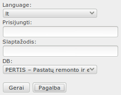

Prisijungti prie sistemos
Atsiversti saityno naršyklę, adreso laukelyje surinkti sistemos url adresą, pvz. http://pertis.lva.lt
 Sistema gali naudoti taip vadinamą „self signed“ sertifikatą šifruotam SSL ryšiui. Saityno naršyklės nežino apie tokio
sertifikato buvimą, todėl informuoja naudotoją, kad ryšys nesaugus. Reikia ignoruoti naršyklės pranešimą arba įdiegti
sertifikatą. (Saitas į sertifikatą) arba klauskite pas sistemos administratorių.
Sistema gali naudoti taip vadinamą „self signed“ sertifikatą šifruotam SSL ryšiui. Saityno naršyklės nežino apie tokio
sertifikato buvimą, todėl informuoja naudotoją, kad ryšys nesaugus. Reikia ignoruoti naršyklės pranešimą arba įdiegti
sertifikatą. (Saitas į sertifikatą) arba klauskite pas sistemos administratorių.
- Spausti ignoravimui:
- Internet explorer – „Continue on this website“
- Mozilla Firefox – „I understand risks“, po to „Add exception“
- Google Chrome – „Proceed anyway“
Atsiverčia įsijungimo į sistemą forma
- 
- Laukelyje „Language“ galite pakeisti kalbą
- Laukelyje „Prisijungti“ įvesti prisijungimo vardą, suteiktą sistemos administratoriaus, arba LSMU AD prisijungimo vardą
- Laukelyje „Slaptažodis“ įvesti slaptažodį, suteiktą sistemos administratoriaus, arba LSMU AD slaptažodį.
- Laukelyje „DB“ pasirinkti duomenų bazę, pvz. PERTIS
- Spausti
Jei paspaudus „Gerai“ nieko nevyksta arba matyti pranešimas „Netinka vardas/slaptažodis/DB“, pasitikrinkite, ar teisingai įvedėte prisijungimo vardą, slaptažodį, ar parinkote duomenų bazę ir bandykite dar kartą, arba kreipkitės į sistemos administratorių.